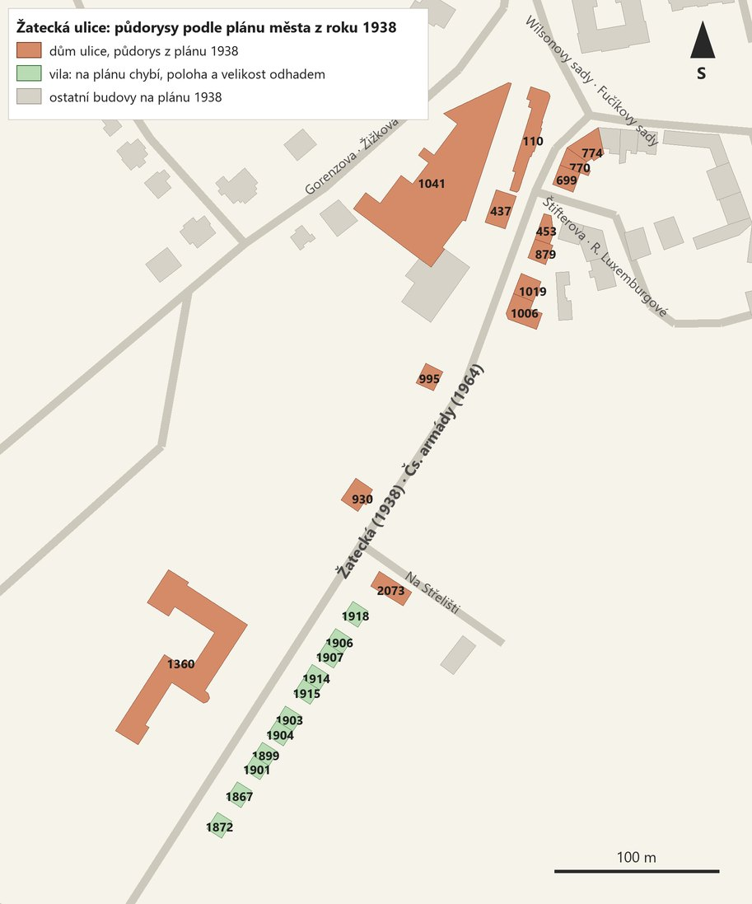

Ulice a její názvy
Ulice vedla od pivovaru a parku jihozápadním směrem z města. Na plánu z roku 1938 nese název Žatecká, v historické vrstvě názvů ulic k roku 1964 Československé armády. Tento pozdější název používají i karty památkové dokumentace. Kdy přesně byla ulice přejmenována, z našich podkladů neplyne.
Severozápadní stranu tvořil pivovar s restaurací, vily a budova gymnázia. Na jihovýchodní straně stála řada činžovních domů od Fučíkových sadů k ulici Na Střelišti a za ní řada vil a dvojvil.
| Ulice | Název 1938 | Název 1964 |
|---|---|---|
| sama ulice | Žatecká | Československé armády |
| boční ulice u domů 699 a 453 | Štifterova | Rosy Luxemburgové |
| park u domu 774 | Wilsonovy sady | Fučíkovy sady |
| ulice za pivovarem | Gorenzova | Žižkova |
| odbočka u domu 2073 | Na Střelišti | Na Střelišti |
Názvy podle historické vrstvy ulic města Most. Vančurova a Larcova ulice za vilami jsou známé jen z popisů na kartách.

Prameny a jejich stáří
| Pramen | Doba vzniku | Co dokládá | Omezení |
|---|---|---|---|
| Plán města Mostu z roku 1938, vektorizovaný Statutárním městem Most a zveřejněný jako otevřená data (CC BY-SA) | 1938 | Půdorysy a polohu 14 domů, průběh ulice, u některých budov popis: „Brauerei / Pivovar“, „Německé gymnázium“. | Chybí na něm 11 vil. Čísla popisná ve vektorizaci nemusí být bezchybná. |
| Fotodokumentace památkového oddělení KSPPOP v Ústí nad Labem: 72 fotografií | Doba likvidace starého Mostu. Na snímku vily 1914 je vůz Škoda řady 1000 MB/100, vyráběný od roku 1964. | Podobu průčelí, počet podlaží a oken, vstupy, střechy, vikýře, nápisy, poškození, zahrady a zadní strany. | Snímky nejsou datované a nejsou časově jednotné; ukazují pozdní, často zanedbaný stav. |
| Popisy na rubech karet: 69 karet s razítky KSPPOP Ústí n. L. a Okresního archivu v Mostě, značka XI/D; část podepsal F. Čermák | Psány až po zboření části domů: mluví o „posledních zbořených vilkách“ a o domech, které „zůstaly“. Používají názvy Čs. armády, sady Rudé armády, Fučíkovy sady, SNB. | Který dům je na snímku, odkud byl snímek pořízen, kdo jsou sousedé, které domy už byly zbořené. | Na několika místech si odporují s daty plánu z roku 1938. |
| Situační náčrty parcel: 23 náčrtů ze stejné dokumentace | Současně s fotodokumentací | Pořadí domů a orientační čísla, tvar střech, komíny, vikýře, zahrady, kůlny, průchody a sousední pozemky. | Kreslené od ruky, bez měřítka a rozměrů. |
| Pohlednice: 8 pohlednic | Nejstarší s nápisem „BRÜX. K.K. Staats-Oberrealgymnasium“, tedy z doby před rokem 1918; ostatní nedatované. | Starší podobu gymnázia a pivovaru. | Zachycují jen několik budov. |
Fotografie, karty, náčrty i pohlednice jsou uložené v databázi projektu MOST u jednotlivých domů; na stránkách domů jsou všechny ve zmenšených náhledech.


Model nezobrazuje jeden okamžik
Půdorysy 14 domů pocházejí z plánu z roku 1938. Vzhled domů je převzatý z fotografií z doby likvidace města, které vznikly nejméně o čtvrt století později. U gymnázia pomáhají i pohlednice z doby před rokem 1918.
Model proto spojuje stav z různých let. Obchod POTRAVINY nebo poškozené omítky patří době fotografií, obrys domů plánu z roku 1938. Pokud se dům mezi oběma daty přestavoval, model to nezachytí.
Kolize mezi prameny
- Jedenáct vil na plánu z roku 1938 chybí. Vily 1867 až 1918 jsou na fotografiích, náčrtech i kartách. Na plánu je podél této části ulice prázdná plocha. Nabízí se dva výklady. Vily mohly vzniknout až po roce 1938; jejich čísla popisná jsou ale nižší než u domu 2073, který na plánu je, a čísla se obvykle přidělovala postupně. Nebo plán či jeho vektorizace okrajovou zástavbu nezachycuje. Rozhodnout to může nahlédnutí do původního plánu nebo do stavebních spisů.
- Čp. 2073: „novostavba“, a přesto na plánu z roku 1938. Karta popisuje uličku Na Střelišti „s novostavbou čp. 2073“, data plánu přitom půdorys s tímto číslem obsahují. Číslo mohla nést dřívější budova na stejném místě, „novostavba“ může znamenat stavbu z konce 30. let, nebo bylo číslo do dat plánu doplněno až z novějších podkladů.
- Čp. 1006 a 1019 mají v datech plánu prohozená čísla. Na fotografii dvojdomu je rukou připsáno 1019 nad severovýchodní částí a 1006 nad nárožím, náčrt uvádí 1019/6 a 1006/7 a odpovídá tomu i pořadí orientačních čísel. Model se řídí archivními prameny.
- Budovy na plánu, které model nemá. U pivovaru je na plánu ještě budova bez čísla popisného, asi 950 m². Několik dalších domů v okolí patří podle náčrtů k bočním ulicím, ne k Žatecké.
Jak jsme umístili vily, které na plánu chybějí
Vily 1918, 1906/1907, 1914/1915, 1903/1904, 1899/1901, 1867 a 1872 jsme do modelu museli umístit bez plánu. Z pramenů známe jejich pořadí a stranu ulice, konkrétní polohu a velikost parcel jsme odhadli.
Doloženo prameny
- Pořadí. Každý náčrt nese orientační číslo domu: 1918 je desáté, 1906 jedenácté a tak dál až po 1872 s číslem dvacet. Náčrty popisují i sousedy, například „vlevo pozemek domu 2073, vpravo zahrada čp. 1906“ nebo průchod do Vančurovy ulice za vilou 1915.
- Začátek řady. Karta k pohledu ulicí popisuje odbočku Na Střelišti s domem 2073 a pokračuje: „dále jdou vilky ulice ČSA 1918, 1906/1907, 1914/1915“.
- Strana ulice. Na náčrtech je ulice Čs. armády vždy dole a před domy předzahrádka pod úrovní ulice. Zadní strana vily 1918 byla podle karty fotografována z domu 2072 na rohu Vančurovy ulice a Na Střelišti, v pozadí za ulicí stojí muzeum 1360. Vily tedy stály na jihovýchodní straně, mezi Žateckou a Vančurovou ulicí.
- Konec řady. Vily 1867 a 1872 jsou podle karet dvě poslední zbořené vily ulice; za nimi zůstal trojdům 2104–2106 v Larcově ulici.
Odhadnuto
- Řada začíná asi 30 m za odbočkou Na Střelišti. Na jeden dům počítáme 10 až 12 m šířky parcely, mezi dvojvilami asi 5 m, na průchod do Vančurovy ulice asi 9 m.
- Průčelí stojí asi 14,5 m od osy ulice, za předzahrádkou s nízkou zídkou a plotem.
- Velikost domů, 10 až 12 × 11 až 12 m, vychází z proporcí průčelí na fotografiích.
Celá řada tak měří zhruba 200 m. Skutečnost mohla být kratší i delší. Polohu lze upřesnit podle katastrální mapy, leteckých snímků nebo stavebních spisů.
Domy ulice
Severozápadní strana: od pivovaru ke gymnáziu

Restaurace pivovaru

Dům v areálu pivovaru

Pivovar

Neobarokní vila

Vila se středním rizalitem

Gymnázium, později průmyslová škola a muzeum
Jihovýchodní strana: od Fučíkových sadů k ulici Na Střelišti

Nárožní činžovní dům u Fučíkových sadů

Dvoupodlažní dům

Nárožní dům s obchodem POTRAVINY

Dům na nároží ulice Rosy Luxemburgové

Dvoupodlažní dům

Část třípodlažního dvojdomu

Nárožní část dvojdomu

Dům na nároží ulice Na Střelišti
Vilová řada za ulicí Na Střelišti

Vila se dřevěným podkrovím

Polovina dvojdomu 1906/1907

Polovina dvojdomu 1906/1907

Polovina dvojdomu 1914/1915

Polovina dvojdomu 1914/1915

Polovina dvojdomu 1903/1904

Polovina dvojdomu 1903/1904

Polovina dvojdomu 1899/1901

Polovina dvojdomu 1899/1901

Vila s mansardovým podkrovím

Poslední vila ulice
Co je v modelu doložené a co odhadnuté
| Údaj | Odkud pochází | Jistota |
|---|---|---|
| Poloha a půdorys | Plán z roku 1938 (14 domů); u 11 vil pořadí z náčrtů a karet | Doloženo u 14 domů, odhad u 11 vil |
| Počet podlaží, okenních os, vstupy, balkony, vikýře, tvar střechy | Fotografie a náčrty | Doloženo u stran, které snímky ukazují |
| Výška podlaží, velikost oken, sklon střech | Odhad z fotografií | Žádné rozměry nejsou zaměřené |
| Zadní strany a dvory | Snímky ze zahrad a dvorů jen u části domů | Často odhad |
| Barvy a materiály | Model barvy nemá | Odstíny jen rozlišují omítku, střechy a okna |
| Štuková výzdoba, nápisy, poškození | Na fotografiích ano | V modelu nejsou |
Pivovar a gymnázium jsou zachyceny jen celkovou hmotou. U ostatních domů model ukazuje členění průčelí, ne jejich výzdobu.
Jak model vznikl
Z plánu z roku 1938 jsme převzali polohu a půdorysy domů. U každého domu jsme prošli všechny fotografie, karty, náčrty a pohlednice z databáze projektu a zapsali, co dokládají: počet podlaží, rozmístění oken a vstupů, tvar střechy, vikýře, balkony. Podle těchto údajů vznikl jednoduchý 3D model každého domu. Každý model jsme prohlédli z deseti stran a porovnali s fotografiemi; chyby jsme opravili ve dvou kolech.
Podrobný technický popis, použité soubory a postup najdete v technické verzi stránky a ve zprávě.